✦ Grazie, ma non dovete salvarci ✦
Un film di Sara Emara
Ogni voce tramandata cresce
Scritto e prodotto da Sara Emara · Regia e riprese di Sara Emara e Laura Pronestì · Unit publicist Aurora Rizzo · Montaggio [da definire]
فيلم لسارة عمارة
Prossimamente
رنين
ranīn
/raˈniːn/ s.m.
رَنين
اسم
1. Giornate al mare: la cassetta che gira,
l’eco delle onde che non smette.
١. أيامُ البحر: الكاسيت يدور،
وصدى الموج لا ينقطع.
ranīn
/raˈniːn/ s.m.
رَنين
اسم
2. Le voci che hai sentito da bambina
e che continui a sentire.
٢. الأصواتُ التي سمعتِها وأنتِ صغيرة
وما زلتِ تسمعينها.
ranīn
/raˈniːn/ s.m.
رَنين
اسم
3. Il suono di una festa che ti resta
addosso, anche lontano da casa.
٣. صوتُ فرحٍ يبقى معكِ
حتى وأنتِ بعيدة عن البيت.
ranīn
/raˈniːn/ s.m.
رَنين
اسم
4. La risata delle amiche d’infanzia,
che ti risuona ancora nelle orecchie.
٤. ضحكاتُ صديقات الطفولة
ما زالت تَرِنّ في أذنَيك.
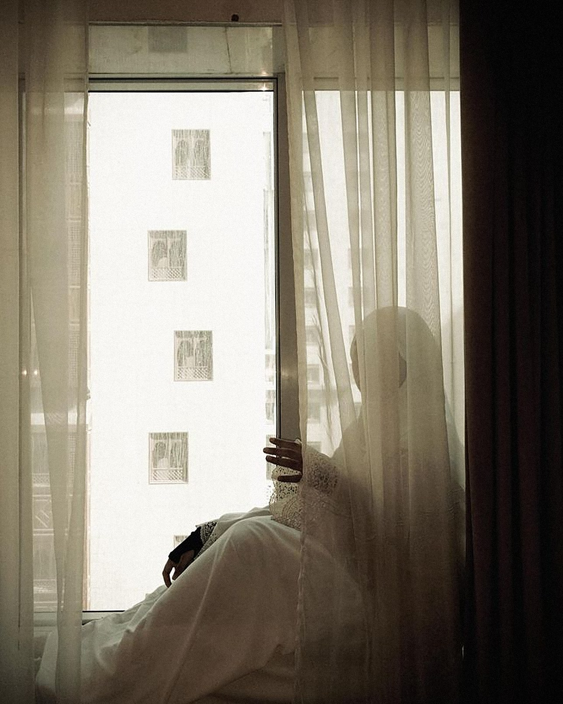
Le domande di ogni giorno
أسئلة كل يوم
«Come ti vesti nel tuo paese?»
«Sei sposata?»
«Ti senti più di qui o di là?»
«Non sembri italiana ma di dove sei, davvero?»
Chi le fa è sempre convinto di essere il primo.
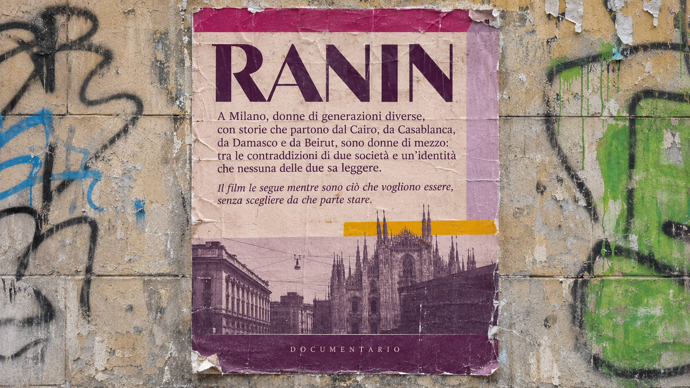
RANIN · Pitch 2026
Due fronti
جبهتان
La mano tesa in nome dei «diritti delle donne» cerca spesso più approvazione che cambiamento. Le donne diventano storie da raccontare, meglio se dolorose, abbastanza da commuovere e far sentire dalla parte giusta. Ma quando il racconto si trasforma in una richiesta concreta, quella mano si ritira. C'è uno spritz che aspetta.
Regimi sostenuti dall'Occidente si fanno custodi della morale, mentre scuole, ospedali e giustizia passano in secondo piano. La frustrazione sociale viene indirizzata verso chi sfida le regole, e le donne finiscono spesso nel mirino. In pubblico si difende la virtù, nel privato si pratica ciò che si condanna. La morale vale soprattutto quando serve a controllare gli altri.
Non siamo un numero di generazione
لسنا رقمَ جيل
Una nuova lingua da imparare, la burocrazia da affrontare, titoli di studio che perdono valore. Deve dimostrare continuamente le proprie capacità, spesso più degli altri, mentre cerca di ricostruire una rete di relazioni lontano da tutto ciò che conosceva.
Parla più lingue, attraversa culture e generazioni. La famiglia e la società sembrano chiedere cose opposte, ma a volte finiscono per imporre la stessa cosa: non essere mai abbastanza.
Cerca le proprie radici, le riscopre, le mette in discussione e le reinventa. Cresce tra riferimenti che non sempre coincidono, aspettative che si contraddicono e spazi di libertà ancora da conquistare. Non vuole scegliere tra due mondi. Vuole poterli abitare senza dover giustificare continuamente chi è.
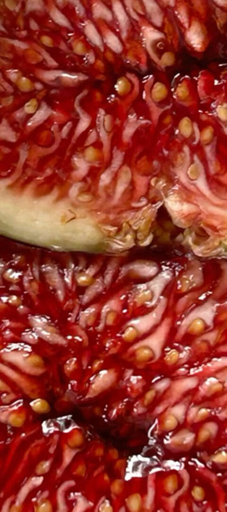
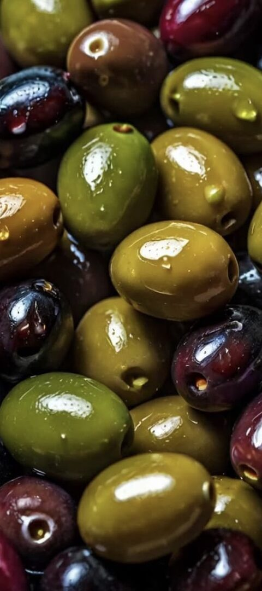
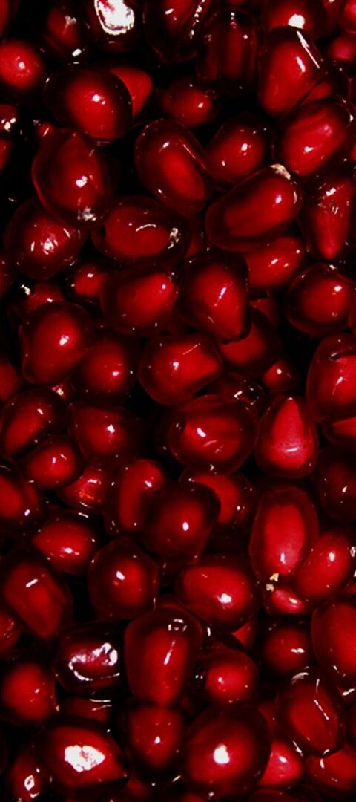
Di cosa parla
عمّا يتحدّث
Le radici restano, ma si può fiorire altrove. E non sempre il profumo viene riconosciuto.
Morbido, esposto, desiderato e giudicato. Un corpo su cui tutti sembrano avere qualcosa da dire, tranne chi lo abita.
Arabo e italiano impastati insieme, come il pane di strada.
Dolce come il dattero che rompe il digiuno. Si condivide, non si impone.
Le radici attraversano generazioni e confini. Si eredita ciò che è stato custodito, ma anche ciò che è rimasto irrisolto.
Come il mais sulla brace: scoppiettano, si scottano, ma non si spengono.
Racchiusi, succosi, pronti a esplodere. Il piacere femminile è molteplice, intimo e non sempre disposto a rispettare i divieti.
Come la menta: se la strappi, ricresce più forte. E si prende tutto il giardino.
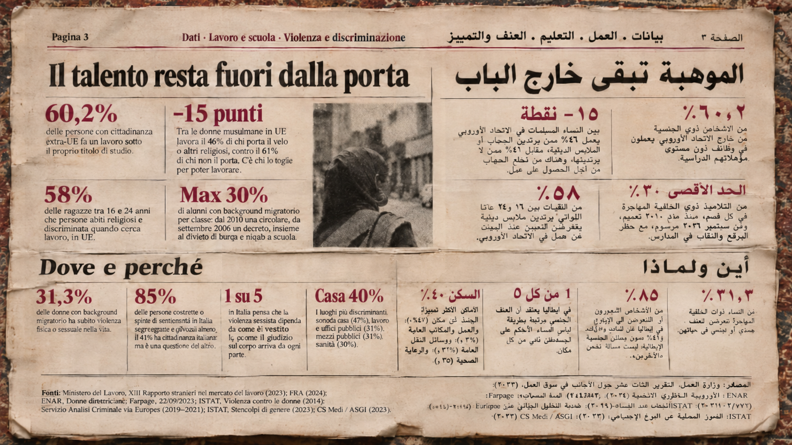
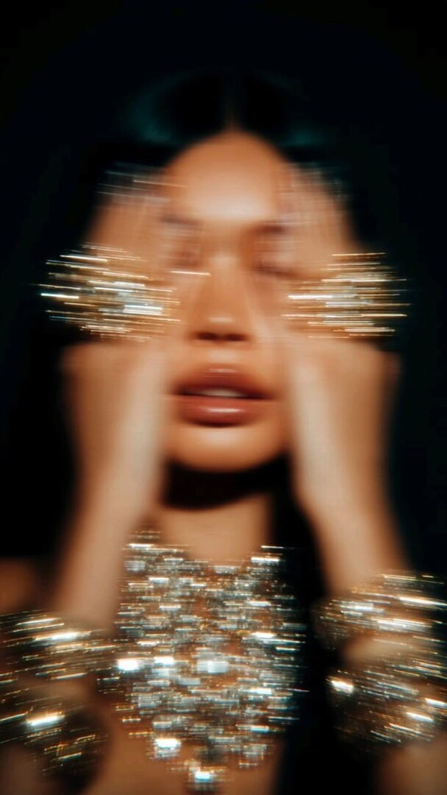
Perché Milano
لماذا ميلانو
Un crocevia di storie e appartenenze.
Milano accoglie chi arriva dall’estero, dal Sud e dalle province. C’è chi si ferma, chi riparte e chi cerca di costruirsi una vita. Una città multiculturale, dove convivono opportunità, disuguaglianze e nuove forme di comunità.
Dove apparire conta quasi quanto essere.
Moda, design, social e culto dell’immagine. In una città che celebra l’individualità e l’emancipazione, anche il corpo femminile resta sottoposto a giudizi, aspettative e modelli da rispettare.
Di giorno si lavora, di notte ci si reinventa.
Tra università, uffici, lavori precari e responsabilità familiari, la notte apre altri spazi. Musica, club, incontri e relazioni diventano occasioni per sperimentare libertà che durante il giorno trovano meno spazio.
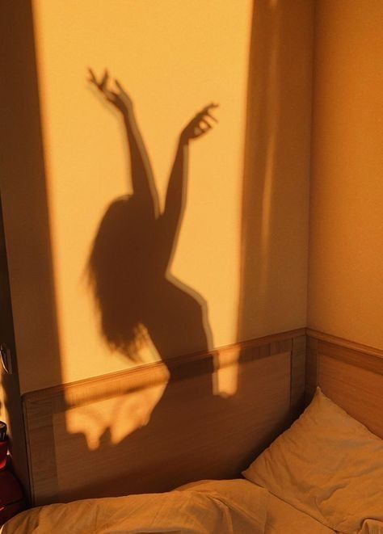
Per chi è
لِمَن هو
01
La diaspora
Chi vive queste cose ci si ritrova, e magari si sente un po’ meno sola.
02
Lo sguardo esterno
Per chi pensa di sapere già cosa significhi essere una donna. RANIN mette in discussione stereotipi e convinzioni, mostrando una complessità che raramente trova spazio nel racconto dominante.
L’obiettivo: far arrivare la complessità. Non per forza scioglierla.
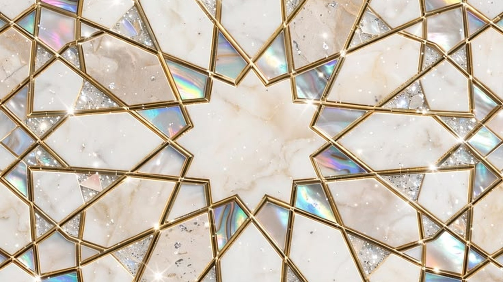
Perché Ranin
لماذا رنين
Non un film sulle donne della diaspora.
Un film delle donne della diaspora.
Lo sguardo
Tra eredità coloniali, differenze di classe e memorie familiari, le identità si costruiscono, si contraddicono e si trasformano. Senza dover scegliere una sola parte di sé.
La forma
Tra generazioni, lingue e modi diversi di intendere la libertà. L'ironia attraversa i conflitti, le abitudini e le contraddizioni di donne che non cercano di essere un modello.
L’impatto
Riconoscersi nella complessità, senza doverla giustificare. Mettere in discussione le gerarchie che decidono quali voci contano, quali storie meritano spazio e chi può raccontarle.
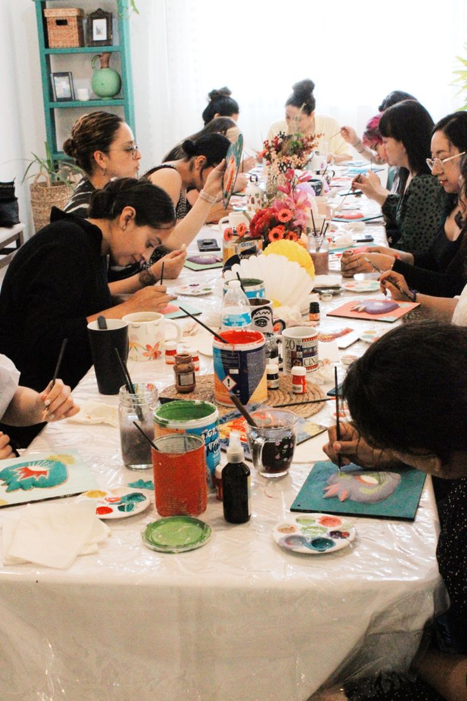
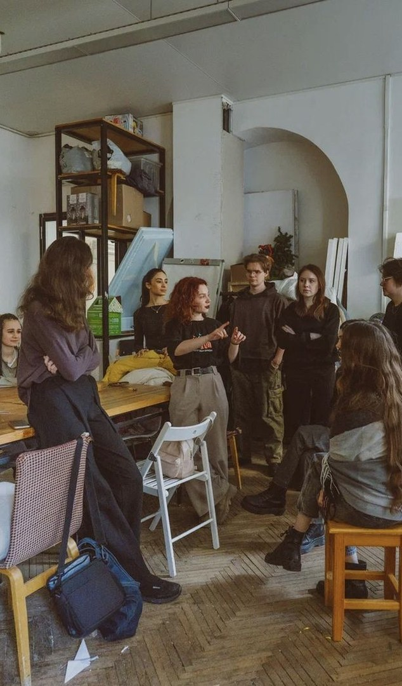
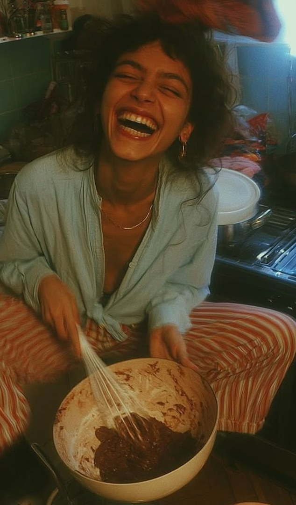
Le protagoniste
البطلات
Dardashe è un collettivo femminista di donne della diaspora, con sede a Milano e attivo anche nel resto d’Italia. Organizza incontri, laboratori, eventi e iniziative culturali e artistiche.
01
Le possibili protagoniste di RANIN fanno parte di questa realtà. Donne di età, professioni e percorsi differenti, ciascuna con un proprio rapporto con le origini, la famiglia e la quotidianità.
02
Il documentario seguirà alcune di loro anche fuori dagli incontri del collettivo, nei luoghi e nelle relazioni che fanno parte delle loro vite.
03
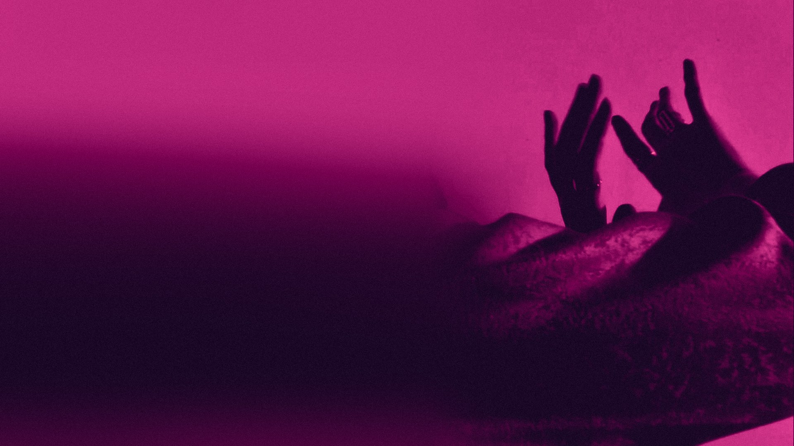
Prima ci si conosce
أولًا نتعارف
01
La camera arriva dopo, quando ci si fida.
Ci vuole tempo.
02
Cosa raccontare, cosa no, e quando.
03
Se una cosa non si vuole dire, non si dice.
04
Solo la voce, di spalle, le mani, o in animazione.
05
Chi parla poco italiano parla nella sua lingua. Chi ha paura di esporsi decide lei come esserci.
06
Lasciamo che si esprimano con le proprie parole.
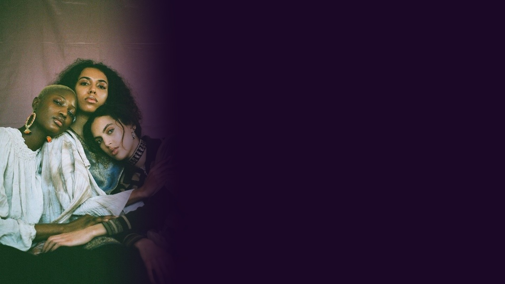
Tre movimenti
ثلاث حركات
I
Gesti quotidiani, passioni, amicizie, musica e desideri. Le protagoniste si raccontano attraverso ciò che fanno, ciò che amano e il modo in cui abitano il mondo.
II
Le convenzioni familiari, i conflitti generazionali e le differenze di classe si intrecciano con il razzismo, l'esotizzazione e le aspettative di emancipazione della società occidentale. La libertà viene messa in discussione da entrambe le parti.
III
Le differenze diventano occasione di scontro, ironia, complicità e solidarietà. Nessuna pretende di rappresentare tutte. Ognuna costruisce il proprio spazio, aprendolo a chi verrà dopo.
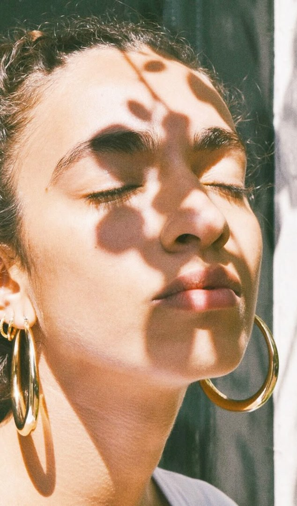
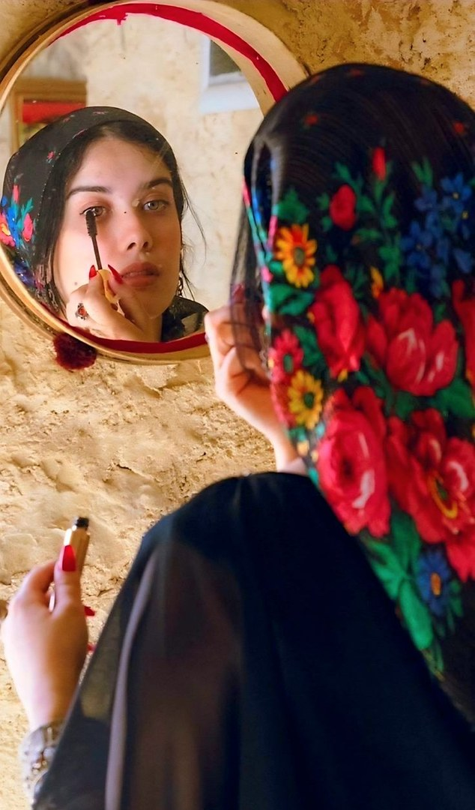
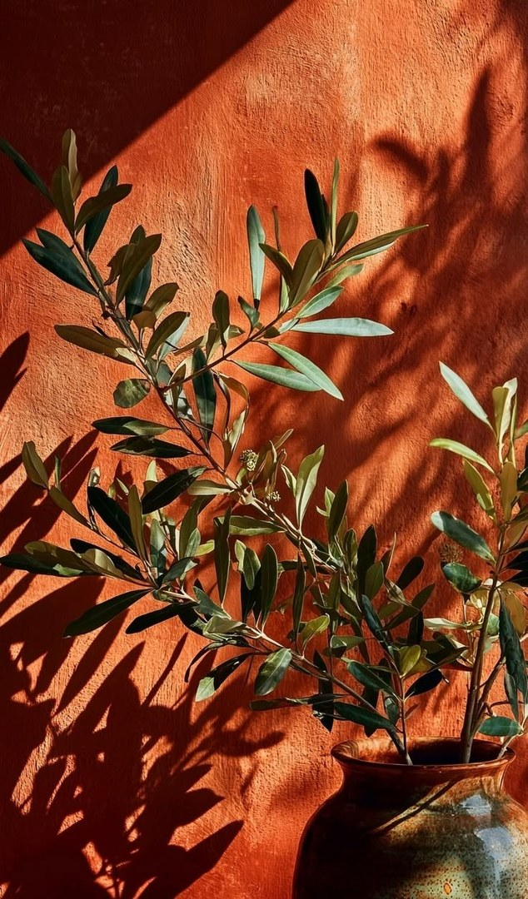
Linguaggio visivo
اللغة البصرية
Luce
Luce naturale, ombre sui volti, interni domestici e strade. Senza cercare un'estetica esotica o idealizzata.
Camera
La camera osserva, partecipa e lascia spazio. Nei gesti quotidiani, negli sguardi, nelle conversazioni e nei silenzi.
Colore
Tessuti, pareti, oggetti, piante e luci della città. Una palette viva, tra toni caldi e colori pop, senza ridurre l'identità culturale a un'estetica riconoscibile.
Case vissute, corpi in movimento, dettagli quotidiani, musica, sovrapposizioni linguistiche e momenti spontanei. Anche il disordine, l'ironia e le imperfezioni hanno spazio.
Folklore costruito, simboli culturali inseriti per decorazione, immagini di donne ridotte a vittime o eroine. Nessuna ricerca dell'esotico per soddisfare lo sguardo di chi osserva.
Mood · Ranin
الأجواء · رنين
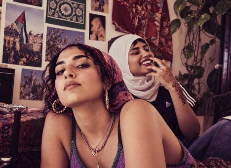
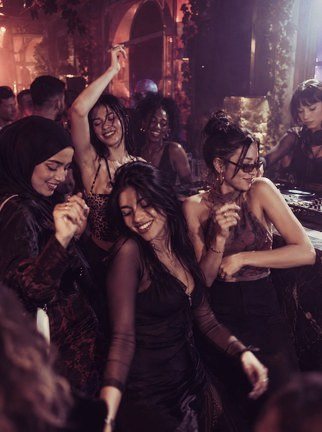
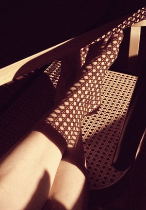
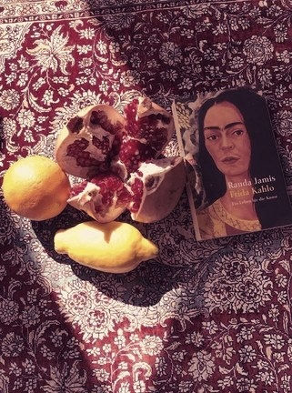
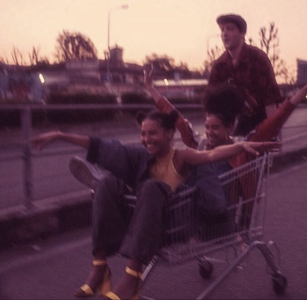
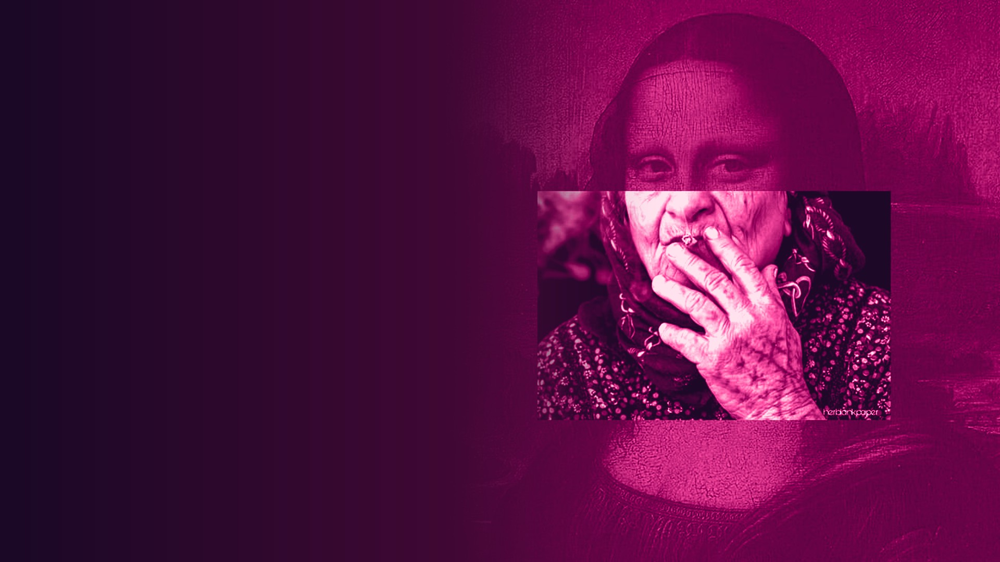
Come parliamo
نبرة الصوت
Ironia rosa:
elegante ma sfacciata.
Diciamo
Non diciamo
il suo nome
«la ragazza col velo»
come si vuole presentare
vittime, eroine
vive a Milano
«si è integrata»
ha scelto
è costretta, si è liberata
ha cambiato idea
è incoerente
ascoltiamo
«diamo voce»
Non cerchiamo donne esemplari. Raccontiamo donne reali, anche quando mettono in crisi le nostre certezze.
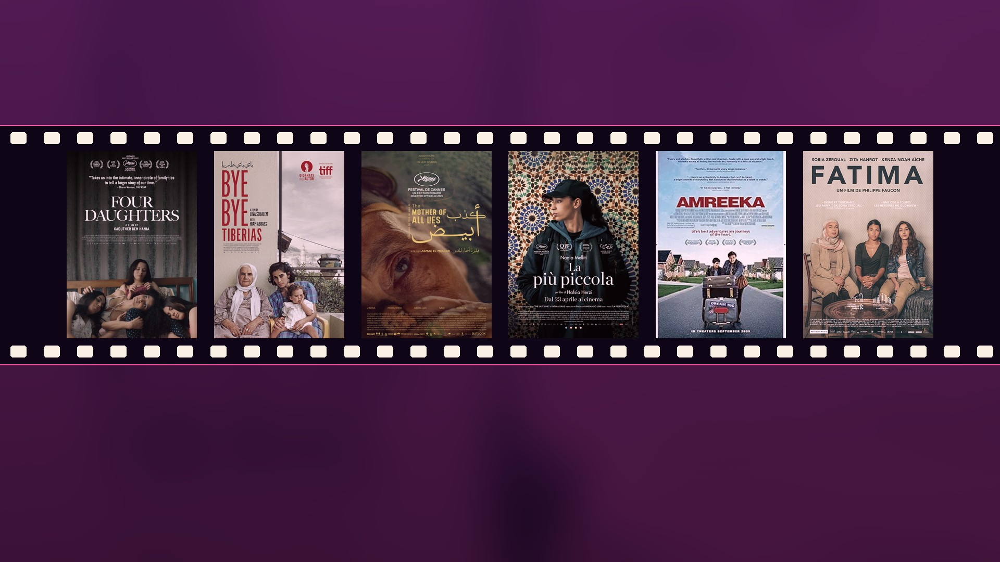
Film con cui parliamo
أفلام نتحدث معها
Madri, figlie, nonne: donne che si raccontano da sole.
Four Daughters
Ben Hania, 2023
Bye Bye Tiberias
Soualem, 2023
The Mother of All Lies
El Moudir, 2023
La più piccola
Herzi, 2025
Amreeka
Dabis, 2009
Fatima
Faucon, 2015
Famiglie, migrazioni, ironia e dignità. Li guardiamo per imparare cosa non spiegare.
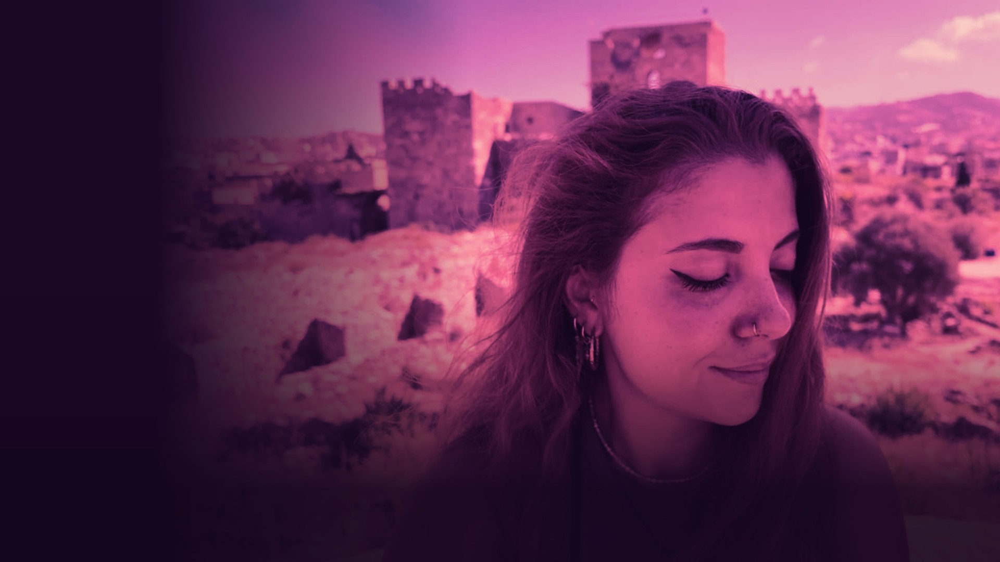
L’autrice
المؤلفة
Sara
Emara
Italo-egiziana, cresciuta e formata al Cairo, parte della diaspora in Italia. Fa parte del collettivo femminista Dardashe.
Troppo italiana in Egitto, troppo egiziana in Italia. Eppure, in entrambi i luoghi, sono a casa.
In Egitto
Il privilegio di essere anche italiana.
Sono cresciuta qui, conosco la lingua, la società e le sue regole. Ma il mio passaporto italiano mi concede privilegi e libertà che non tutte hanno. Appartengo a questo luogo, senza vivere le stesse condizioni di chi mi circonda.
In Italia
L’appartenenza non è scontata.
Sono nata qui e parlo la lingua, ma ho studiato e sono cresciuta in Egitto. Non condivido molti dei riferimenti culturali di chi è cresciuto in Italia e ho dovuto lottare per farmi valere, dimostrare le mie capacità e conquistare uno spazio.
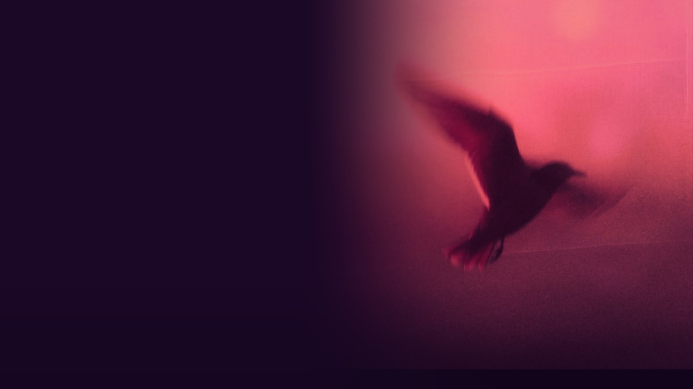
Il progetto
المشروع
Genere
Documentario
Durata
90 min
Lingue
Arabo, inglese e italiano, sottotitolato
Location
Milano
Protagoniste
Donne del collettivo Dardashe e di altre generazioni
Stato
Sviluppo: primi incontri
Riprese
Da ottobre
Budget
[€ __]
رنين
Ogni voce tramandata cresce.
سارة عمارة
Sara Emara · autrice e regista
saraemara.de@gmail.com
(+39) 3349294768
Pitch · usa le frecce ← → per scorrere · F per lo schermo intero
Avvia con audio